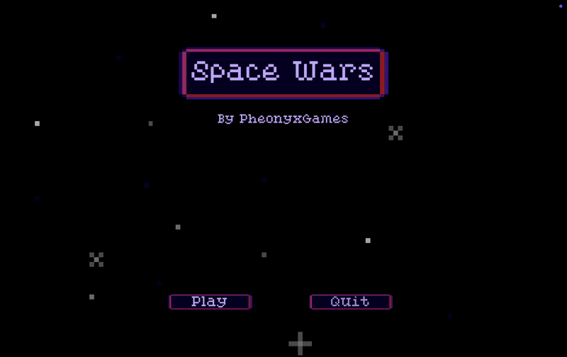

Space Wars
A Deep Dive
A retro styled arcade shooter game created in Unity
for a game jam.

Project Overview
Space Wars is a retro styled arcade shooter game created in Unity for a game jam. Players control a spaceship and must defeat as many enemies as they can while avoiding enemy bullets. This game features an endless wave-like system that gets harder the longer you play.
Key Features
- An old-school arcade visual style
- An endless wave system that ramps up the longer you survive
- Several enemy types, each with their own behavior
- A high score system to chase
Development Details
- Role: Solo Developer
- Engine: Unity
- Language: C#
- Status: Completed
- Platforms: Windows, Mac, Web Browsers
Media


Download & Source
What I worked on
This was a solo jam game where the theme was Aliens, and I wanted to make something in the spirit of Space Invaders. The part I spent the most time on was the wave system. What I built:
- An endless wave spawner that automatically bumps up the enemy count and speed each wave, so the difficulty climbs on its own
- A few different enemy types that get picked and placed at random, so no two waves play quite the same
- The usual arcade backbone, scoring, a high score system, health, pause, sound, and a scrolling background
Development Insights
This was a solo project for a game jam where the theme was Aliens, and I wanted to make a retro arcade game in the style of Space Invaders. The wave system was the fun part to figure out, and I learned a lot about how to make difficulty scale smoothly so the game keeps getting harder without ever feeling unfair.